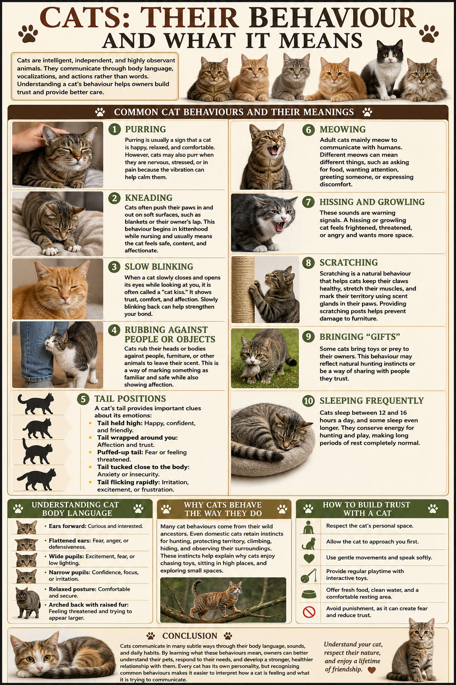

1
Purring
Purring usually means a cat is happy, relaxed, and comfortable. It can also happen when they are nervous or in pain because the vibration helps calm them.
Cat behaviour guide
Cats are intelligent, independent, and highly observant. This guide helps you read their body language, recognise what they mean, and build a stronger, kinder relationship.

Common cat behaviours
Purring usually means a cat is happy, relaxed, and comfortable. It can also happen when they are nervous or in pain because the vibration helps calm them.
Cats often push their paws in and out on soft surfaces like blankets or their owner�s lap. This behaviour begins in kittenhood and usually means the cat feels safe, content, and affectionate.
When a cat slowly closes and opens its eyes while looking at you, it is often called a �cat kiss.� It shows trust, comfort, and affection.
Cats rub their heads or bodies against people, furniture, or other animals to leave their scent. This marks something as familiar and safe while also showing affection.
Adult cats mainly meow to communicate with humans. Different meows can mean asking for food, wanting attention, greeting someone, or expressing discomfort.
These sounds are warning signals. A hissing or growling cat feels frightened, threatened, or angry and wants more space.
Scratching is a natural behaviour that helps cats keep their claws healthy, stretch their muscles, and mark territory using scent glands in their paws.
Some cats bring toys or prey to their owners. This behaviour may reflect natural hunting instincts or a way of sharing with people they trust.
Cats sleep between 12 and 16 hours a day, and some sleep even longer. They conserve energy for hunting and play, making long periods of rest completely normal.
Understanding cat body language
Curious and interested. Your cat is alert and paying attention to what is happening.
Fear, anger, or defensiveness. Give your cat more space and lower the intensity of interaction.
Excitement, fear, or low light. Context matters � watch the rest of the body for the full meaning.
Comfortable and secure. A calm cat will move smoothly and appear loose rather than rigid.
Feeling threatened and trying to appear larger. Approach gently only if the cat chooses to come close.
How to build trust with a cat
Let your cat approach first and avoid pushing them into contact they are not ready for.
Offer a calm presence, and let them decide when they want pets, play, or quiet time.
Speak softly, move slowly, and avoid sudden loud noises or fast hands.
Interactive toys and daily play help cats stay happy, relaxed, and engaged.
Fresh water, nutritious food, and a warm resting space make cats feel safe and cared for.
Cats communicate in many subtle ways through body language, sounds, and daily habits. By learning what these behaviours mean, owners can better understand their pets, respond to their needs, and develop a stronger, healthier relationship built on trust.
Understand your cat, respect their nature, and enjoy a lifetime of friendship.